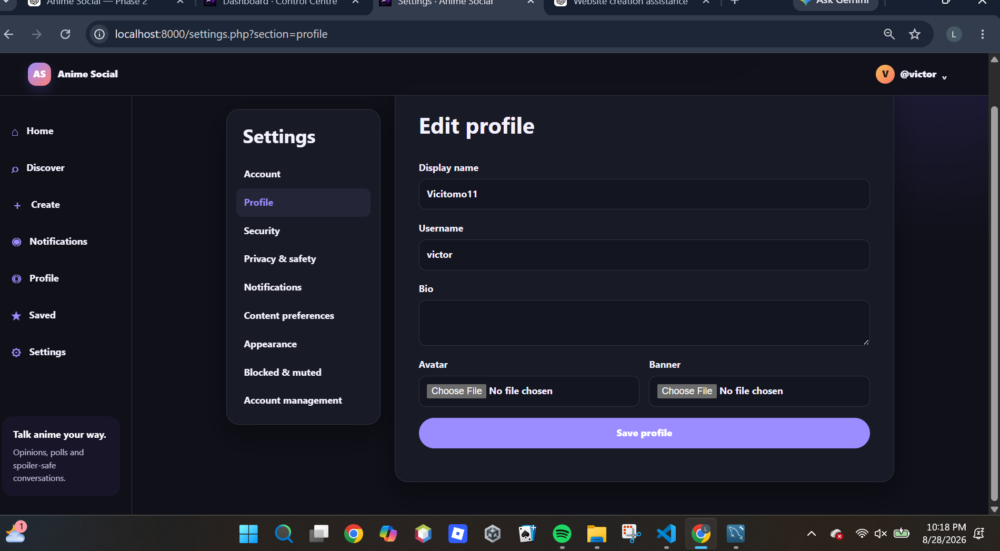
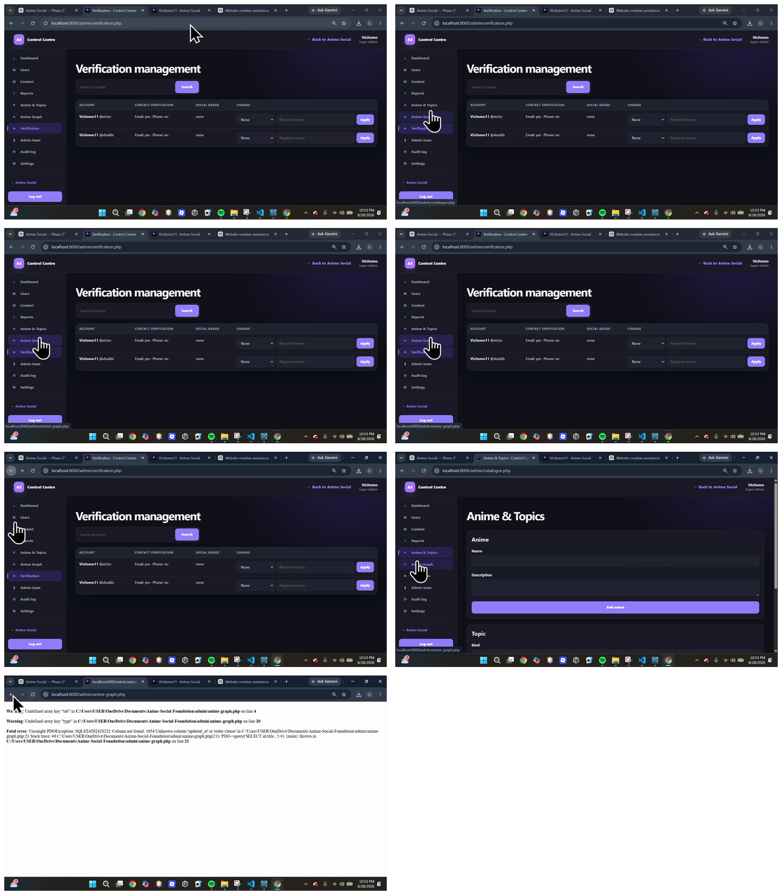

02 · Product in development
Anime
Social
 AS
ASThe system
Community mechanics, not a decorative prototype.
Anime Social is the technical centrepiece of my current work: real authentication, discussions, Hot Takes, polls, replies, follows, notifications, moderation and personal anime-library foundations.
The product separates reusable business logic from page rendering, keeping the architecture ready for future clients while protecting ownership and permissions server-side.
4Core post formats
2Separate auth systems
3Theme preferences


Currently in active development
Next: ERA Snacks →